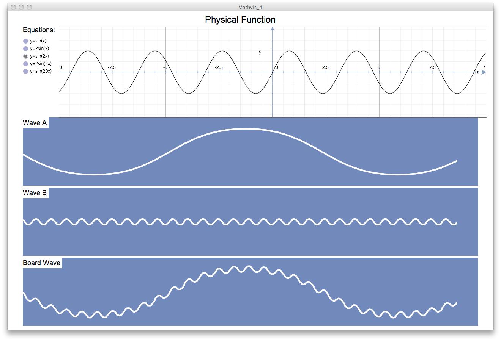
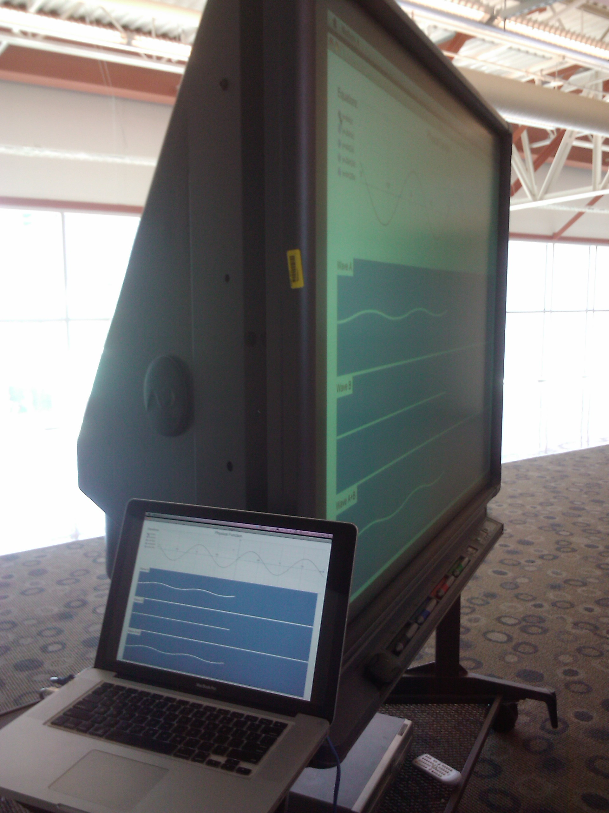
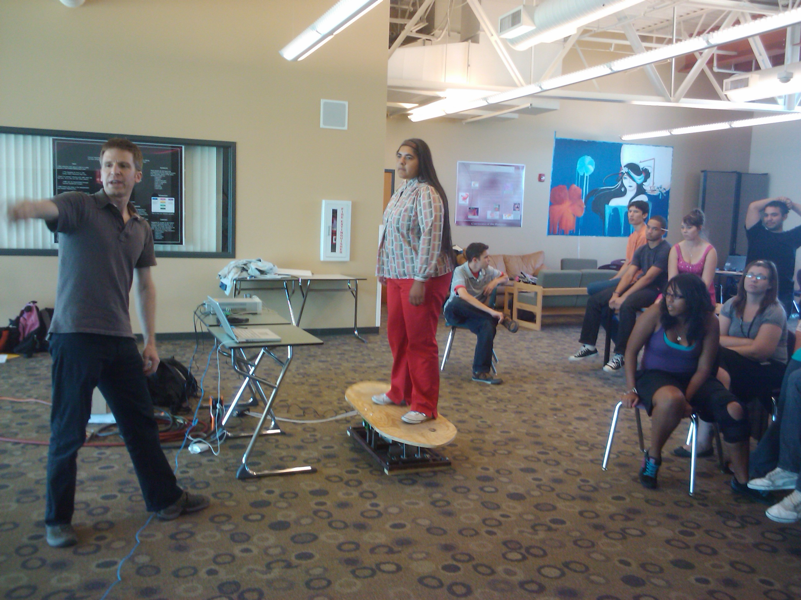

In addition to traditional math equations and visual graphs, kinesthetic learning can be an effective way for students to develop an embodied understanding of mathematical concepts. We developed of Physical Function, an experiential media system for facilitating mathematical concepts for teaching and learning.
Physical Function consists of a surfboard-like platform moved by a software driven electro-mechanical system. The board tilts on a fulcrum point at the center of the board such that the tip and tail of the board rise and fall. Participants interact with the system by balancing on the moving board, observing data visualizations and communicating with the facilitator and their colleagues.
I took a primarily role in developing the 2D interface of live data visualizations and math references. I worked closely with the teammate Byron to connect the 2D interface with the functional process logic of the software. I also contacted and communicated with a high school math specialist (tutor) - a math mentor/ teacher for K-12 students - to get background information and reference of appropriate math functions and equations that can be used for the system
Since a graphical representation of math functions is still helpful for understanding the mathematical concepts, I designed a 2D interface for large screen display or projection. This interface can be presented to the participants, augmenting the kinesthetic experience provided by the Physical Function hardware; or it can be hidden, so as to not distract from the kinesthetic information or experience. The presence of this alternative visualization allows the system operator to constantly monitor the system without presenting visual information to the participant when this is not desired. The layout of the interface contains two main components: one for reference math equations and another for real time waveform visualization, as shown in Figure 1.
Fig. 1. Screenshot of the 2D interface.
Five typical and representative sine wave equations were chosen as references for the wave functions, and their graphs are displayed within the math reference component. The interface enables facilitators to select any individual equation and discuss its graphical representation during the class or informal learning experience. The images were generated by Grapher, which is a bundled application in Mac OS X that is able to create 2D and 3D graphs of math equations.
The live data visualization component contain three wave panels colored in sea blue, which visualize two independent waves (wave A and wave B) along with the current wave that controlling the board motion, which can be wave A, wave B wave A+B, noise wave or any wave with noise. We were trying to simplify and maximize or enlarge the view so that it can be easily observed when displayed in a certain distance from the students. The visualizations are animated to liven up the learning experience.
The interface is implemented in Processing [ref: http://processing.org] and connected to the functional process logic of software, which is realized using Max-MSP, via TCP ports. The three panels respectively connect to the signal channels of wave A, wave B and the current wave. The income signals have been normalized into values between 0 and 1 and rescale within the panels. A smooth function was added to filter out signal errors generated during data transmission via TPC ports, and at the same time ensure smoothly animated visualization.
During the pilot user study, we observed that most of the students, both the observers (audience) as well as the participants (those who rode on the board) watched the interface as reference. Figure 2 and Figure 3 show the installation at BioScience high school, where our 2D interface was displayed on a big TV screen.
Fig. 2. The installation at BioScience High School.
Fig. 3. A high school student was interacting with our Physical Function hardware.